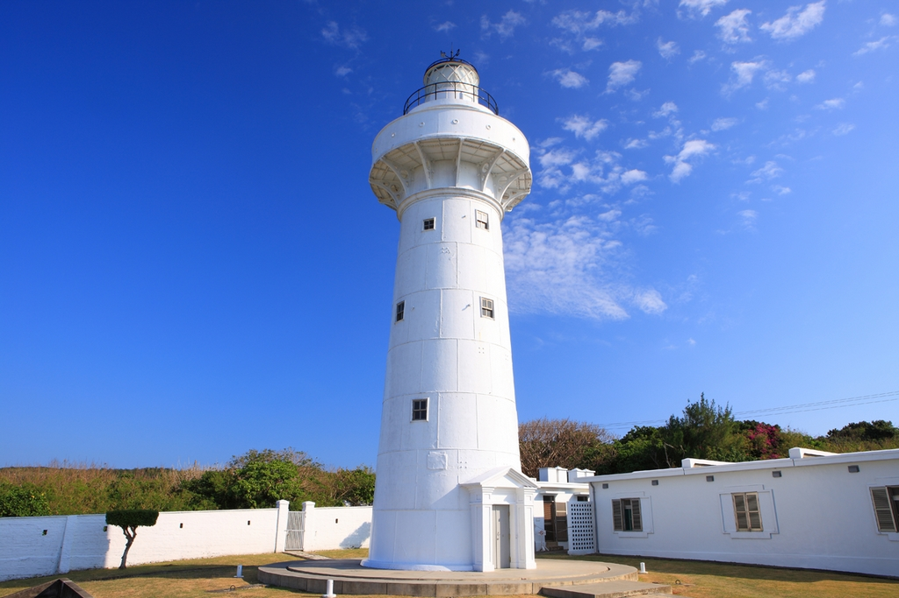

「墾丁國家公園」地處台灣南隅，三面環海，是台灣地區的首座國家公園、也是國內唯一涵蓋陸地與海域的國家公園，也是台灣本島唯一的熱帶區域，湛麗的海洋、晶藍的蒼穹、特殊的地形、豐饒的動、植物相及獨特的民情風俗，不僅是保育、研究、環境教育的自然博物館，更是國民休閑旅遊的怡情勝地。
首先歡迎各位網友造訪墾丁國家公園的網站！瑪沙露！（墾丁國家公園的問候語，南排灣族語，意思為「謝謝」）「墾丁」名稱的由來是清光緒三年（西元一八七七年），清廷招撫局自廣東潮州一帶募集大批壯丁到此墾荒，為紀念這些篳路藍褸、以啟山林的開「墾」壯「丁」，因而得名。